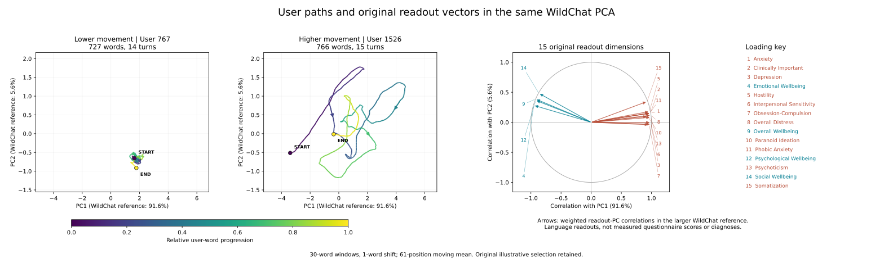

Clinically important signs: sleep-onset difficulty, poor appetite, guilt, and thoughts of death
MHC-SF · 4 readouts
Overall wellbeing
Emotional wellbeing
Social wellbeing
Psychological wellbeing
Training labels: participant-level questionnaire profiles. Model outputs: calibrated projections onto the 15 frozen directions.
Results I
Frozen readouts generalize across human text
Further labeled results
Range across Llama, Mistral and Phi
GoEmotions fear ROC AUC .77–.80
EmpatheticDialogues recalled fear ROC AUC .74–.85
IndoNLU fear ROC AUC .71–.78
TweetEval sentiment ROC AUC .72–.76
EmoBank valence Spearman ρ .26–.48
Results II
Readout changes track test–retest change within people
1,698
people with test–retest assessments
Anxiety change, long text: ρ = .32–.34
Worry change, long text: ρ = .23–.25
Short texts carry weaker signals
Pattern replicates across all three encoders
The result supports sensitivity to within-person psychological change across test and retest.
Results III
Psychological readout space reduces—but does not erase—source differences
Interpretation: the 15 psychological scores remove much of the information that distinguishes synthetic from human text, but not all of it.
Phi-4; 2,000 exactly word-count-matched texts per domain. A classifier using only the 15 scores distinguishes synthetic from human text with ROC AUC .86 (.50 = chance).
Illustration
WildChat paths through readout space

Conclusion
What the analysis establishes
Evidence
Psychological information is linearly readable from frozen activations.
Synthetic-trained directions transfer to human self-reports and observer labels.
Readout changes track test–retest changes within people.
The pattern is consistent across three encoder families.